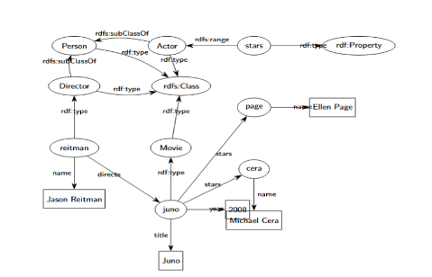
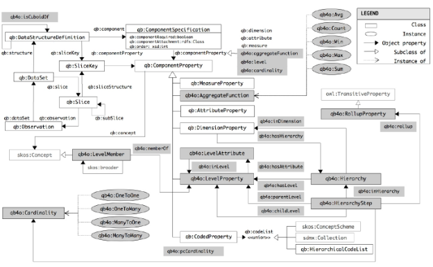

University of Chittagong
Department of Computer Science & Engineering
1st Year M.Sc (Engg.) Examination 2022
Course No: CSE M181
Course Title: Semantic Web Processing
Full Marks: 75 Time: 04 hours
[Answer any five of the following. All questions are of equal value. The figures in the right margin indicate full marks. Please write parts of a question serially.]
a. Write the advantages and disadvantages of the following two data integration models: model-first load-later and load-first model-later. (4)
b. How is Big Data different from Business Intelligence (BI)? (3)
c. Describe the following V's in real-world use cases: Veracity, Variability, Visibility, Viability. (4)
d. Sketch a use case to explain descriptive, predictive, and prescriptive analytics. (4)
a. What is a linked data browser? (2)
b. Discuss the linked data access mechanisms. (3)
c. Illustrate the linked data application development framework. (3)
d. Write about the linked data resources on the web. (4)
e. Will linked data become the semantic web? (2)
f. What is the function of Semantic HTML? (1)
a. Explain the shift from database-centric to knowledge base-centric technology, with components and a use case. (4)
b. Write ontology relationships for the following scenarios using OWL/RDFS: (4)
c. Brief overview of inductive techniques used in knowledge graphs. (2)
d. What is knowledge graph embedding? Explain TransE's method for entity and relation embeddings. (5)
Figure 1: The database schema
| EMP NO | ENAME | JOB | DEPTNO |
|---|---|---|---|
| 7369 | SMITH | CLERK | 10 |
| DEPTNO | DNAME | LOC |
|---|---|---|
| 10 | APPSERVER | NEW YORK |
Figure 2: RDF version of the database
[RDF triples describing the same data in semantic web format.]
<http://data.example.com/employee/7369> rdf:type ex:Employee. <http://data.example.com/employee/7369> ex:name "SMITH". <http://data.example.com/employee/7369> ex:department <http://data.example.com/department/10>. <http://data.example.com/department/10> rdf:type ex:Department. <http://data.example.com/department/10> ex:name "APPSERVER". <http://data.example.com/department/10> ex:location "NEW YORK". <http://data.example.com/department/10> ex:staff 1.
a. Write the R2RML mapping document for converting the DB in Figure 1 to RDF. (4)
b. Draw workflows of direct and R2RML mappings. List four advantages of R2RML. (4)
c. Explain how to serialize RDF data in four formats. (3)
d. Write the benefits of JSON-LD over Turtle format. (2)
e. What is RDF reification? Provide an example. (2)
Figure 3: RDF Graph
a. Write an RDF model in Turtle notation from Figure 3, separating terminological triples and asserted facts. (7)
b. Represent inferred triples using RDFS entailment regime and justify each. Identify new inferred knowledge. (4)
c. Write a SPARQL query: "Retrieve the number of movies starred by Ellen Page per year". Include prefixes. (4)
a. SPARQL queries for DBpedia: (15)
owl:Class).owl:DatatypeProperty or owl:ObjectProperty).populationEstimate.CyclingTeam is OBJECT and <PROPERTY, OBJECT> where it's the SUBJECT.rdfs:label) of all persons born in Barcelona, ordered ascending.Figure 4: Data to be multidimensionally analyzed
| ZL | UZ | UN/WA | MZ/MH | VIL | RMO | Administrative Unit - Residence Community | Area in Acres | Total Households | Population Total | Population in Households | Floating Population | Population Density (sq. km) |
|---|---|---|---|---|---|---|---|---|---|---|---|---|
| 15 | 37 | 29 | 253 | 1 | Enayetpur | 1310 | 6781 | 6771 | 10 | |||
| 15 | 37 | 29 | 799 | 1 | Paschim Dhalai | 5725 | 30247 | 30247 | 0 | |||
| 15 | 37 | 35 | Fatehpur Union Total | 5668 | 7562 | 43929 | 43911 | 18 | 1915 | |||
| 15 | 37 | 35 | 370 | 1 | Jobra | 1182 | 5935 | 5935 | 0 | |||
| 15 | 37 | 35 | 448 | 1 | Jungle Paschim Patty | 428 | 4804 | 4804 | 0 | |||
| 15 | 37 | 35 | 643 | 1 | Maizpatty (Fatehpur) | 2108 | 11697 | 11691 | 6 | |||
| 15 | 37 | 35 | 702 | 1 | Mithachara (Part) | 585 | 3203 | 3203 | 0 | |||
| 15 | 37 | 35 | 721 | 1 | Mithanala | 291 | 1564 | 1564 | 0 | |||
| 15 | 37 | 35 | 838 | 1 | Paschim Patty | 2968 | 16726 | 16714 | 12 |
a. Based on Figure 5: (15)
Figure 5: QB4OLAP vocabulary
a. Comparative analysis of triple stores: JenaTDB, Virtuoso, GraphDB. (3)
b. What is a property graph? How is it different from an RDF graph? Provide examples. (3)
c. For ex:Albert_Einstein, explain completeness metrics: Schema, Property, Population, Interlinking, Currency, Metadata, Labelling. (4)
d. Describe a process to build a vocabulary for hotel reviews (textual format). How can a language model help? (5)